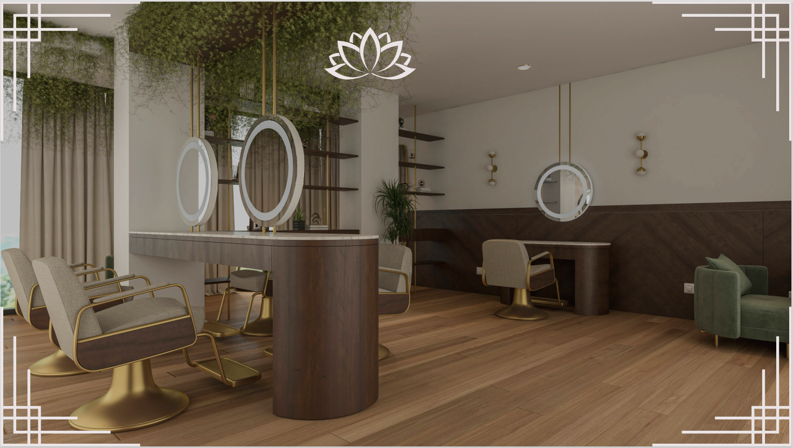

Mawa - Beleza que Respeita a Natureza
No coração da cidade, o Mawa é muito mais que um salão de beleza — é um espaço de autocuidado, bem-estar e consciência ambiental. Especializado em Spa, tratamento capilar, manicure e pedicure e corte de cabelo, o Mawa oferece uma experiência completa, onde beleza e sustentabilidade caminham lado a lado.
Cada serviço é realizado com produtos vegano-friendly, cruelty-free e biodegradáveis, reforçando o compromisso da Mawa com o meio ambiente. O ambiente foi cuidadosamente projetado para proporcionar conforto, sofisticação e tranquilidade, com uma decoração que valoriza materiais naturais, iluminação suave e plantas que purificam o ar.
O Spa Mawa é um convite ao relaxamento, com rituais que combinam técnicas terapêuticas e produtos orgânicos, enquanto os tratamentos capilares utilizam fórmulas livres de substâncias nocivas, realçando a saúde e a beleza dos fios de maneira natural.
Na manicure e pedicure, a Mawa inova com esmaltes veganos e técnicas de cuidado que priorizam a saúde das unhas, sempre respeitando a integridade do corpo e do meio ambiente. Já os cortes de cabelo são assinados por profissionais que valorizam a identidade e a personalidade de cada cliente, com técnicas modernas e sustentáveis, que minimizam o desperdício e promovem a reciclagem de resíduos.
Fechada com causas ambientais, o Mawa também investe em ações de conscientização, como campanhas de redução do uso de plástico, coleta seletiva, e parcerias com marcas que compartilham dos mesmos valores ecológicos.
No Mawa, cada detalhe reflete um propósito: cuidar de você e do planeta ao mesmo tempo.
